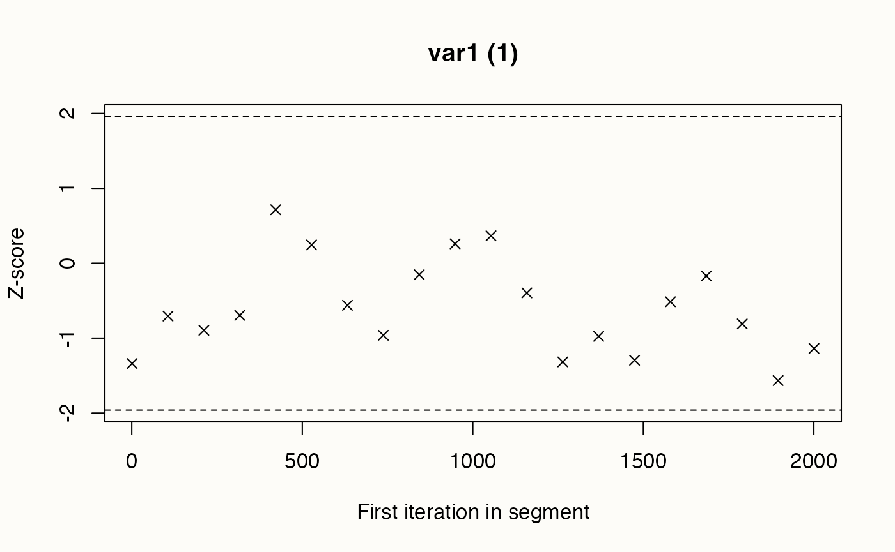

here::here("code", "_common.R") |> source()
# Carichiamo i pacchetti necessari
if (!requireNamespace("pacman")) install.packages("pacman")
pacman::p_load(cmdstanr, posterior, insight, coda, loo)15 Diagnostica delle catene markoviane
Introduzione
Una volta eseguita la stima di un modello in Stan, il primo passo non è interpretare subito i parametri, ma verificare se la procedura di campionamento ha funzionato correttamente. Le catene MCMC, infatti, possono produrre risultati fuorvianti se non hanno esplorato in modo adeguato lo spazio dei parametri.
Per questo motivo, Stan fornisce diversi indicatori diagnostici che permettono di valutare la qualità del campionamento. Questi strumenti servono a rispondere a domande fondamentali:
- Le catene hanno raggiunto la convergenza verso una stessa distribuzione?
- La variabilità campionata rappresenta in modo fedele la distribuzione posteriore?
- Ci sono segnali che i campioni non siano sufficienti o che alcune regioni della distribuzione non siano state esplorate?
Prima di utilizzare i risultati di un modello, è quindi necessario controllare con attenzione queste diagnosi. Solo dopo aver verificato che il campionamento sia affidabile possiamo procedere con l’analisi e l’interpretazione dei parametri.
15.1 Grafici di tracciamento
Uno dei controlli più immediati e istruttivi sulla qualità di un campionamento MCMC consiste nell’osservare i grafici di tracciamento (trace plots). Ogni parametro del modello può essere pensato come una “storia” che si sviluppa lungo le iterazioni: il trace plot ne rappresenta l’andamento, mostrando sull’asse orizzontale il numero di iterazione e sull’asse verticale i valori successivamente campionati.
Quando il campionamento procede correttamente, il grafico appare come una nuvola irregolare ma compatta, oscillante attorno a una fascia stabile. L’immagine ricorda il “rumore” di un televisore non sintonizzato, ma confinato in un intervallo ben definito. Questo è il segnale che la catena si sta mescolando in modo efficace, esplorando la distribuzione posteriore senza blocchi né derive.
Diverso è il caso in cui il trace plot presenti anomalie. Catene che non si sovrappongono, pur partendo da condizioni iniziali differenti, indicano che non stanno convergendo verso la stessa distribuzione. Andamenti strutturati, con salti improvvisi, gradini o derive persistenti, rivelano invece che l’algoritmo non sta campionando in maniera efficiente.
Un trace plot “sano” mostra dunque variazioni casuali e stabili, senza pattern sistematici. Questo fornisce fiducia nelle stime ottenute. Come osservato da [Martin et al. (2022)], è utile confrontare esempi di trace plot ben comportati con altri che evidenziano problemi: i primi confermano la bontà del campionamento, i secondi richiamano la necessità di rivedere il modello o i parametri dell’algoritmo. Nei grafici che seguono, a sinistra si osserva l’andamento delle catene, mentre a destra la densità dei valori campionati. Un campionamento ben riuscito appare oscillante ma privo di tendenze, e la densità corrisponde a una forma regolare e stabile.
15.1.1 Codice R
Esaminiamo il codice R necessario per generare i grafici di tracciamento. Per semplicità, usiamo il modello beta-binomiale in cmdstanr:
stancode <- "
data {
int<lower=1> N; // numero di prove
array[N] int<lower=0, upper=1> y; // esiti (0/1)
}
transformed data {
int<lower=0, upper=N> k = sum(y); // numero totale di successi
}
parameters {
real<lower=0, upper=1> theta; // probabilità di successo
}
model {
theta ~ beta(1, 1); // prior uniforme
k ~ binomial(N, theta); // verosimiglianza sui successi totali
}
generated quantities {
vector[N] log_lik;
for (n in 1:N) {
log_lik[n] = bernoulli_lpmf(y[n] | theta);
}
}
"mod <- cmdstanr::cmdstan_model(
write_stan_file(stancode),
compile = TRUE
)fit <- mod$sample(
data = data_list,
iter_warmup = 1000,
iter_sampling = 4000,
chains = 4,
parallel_chains = 4,
seed = 4790,
refresh = 0
)glimpse(post)
#> 'draws_array' num [1:4000, 1:4, 1] 0.665 0.862 0.834 0.791 0.809 ...
#> - attr(*, "dimnames")=List of 3
#> ..$ iteration: chr [1:4000] "1" "2" "3" "4" ...
#> ..$ chain : chr [1:4] "1" "2" "3" "4"
#> ..$ variable : chr "theta"mcmc_trace(fit$draws("theta")) +
xlab("Post-warmup iteration")15.1.2 Cosa fare se le catene non convergono?
Se i trace plot assomigliano a quelli “cattivi” degli esempi, occorre intervenire. Una possibilità è rivedere il modello, domandandosi se la sua struttura o le prior siano adeguate ai dati. In altri casi basta aumentare la lunghezza del campionamento, così da superare transitori iniziali o oscillazioni locali.
In ogni caso, i trace plot restano uno degli strumenti diagnostici più semplici ma anche più potenti: abituarsi a leggerli con attenzione è una competenza imprescindibile per chiunque utilizzi modelli bayesiani.
15.2 I grafici della densità posteriore sono adeguati?
I grafici della densità posteriore offrono un altro sguardo fondamentale sulla qualità dei risultati di un’analisi bayesiana. Mostrano infatti la distribuzione dei valori campionati per ciascun parametro, fornendo una rappresentazione diretta dell’incertezza residua dopo aver osservato i dati.
Quando le catene hanno esplorato bene lo spazio dei parametri, la densità assume una forma regolare e ben definita, spesso approssimativamente simmetrica e unimodale (soprattutto in presenza di prior normali). Una curva liscia e compatta segnala che i campioni sono rappresentativi della distribuzione posteriore.
Tuttavia, non sempre il quadro è così rassicurante. Asimmetrie marcate o code molto lunghe possono indicare che il modello fatica a vincolare i parametri. La presenza di più picchi suggerisce che il campionatore abbia esplorato regioni distinte dello spazio senza riuscire a integrarle in un’unica distribuzione coerente. Curve troppo piatte o irregolari, infine, possono riflettere un campionamento insufficiente o catene non ancora convergenti.
Quando la densità non appare adeguata, esistono diversi rimedi. Prolungare le catene aiuta a ottenere distribuzioni più stabili; rivedere le prior consente di evitare posteriori irrealistiche o mal condizionate; migliorare le impostazioni del campionatore può rendere l’esplorazione più efficiente.
In sintesi, l’ispezione delle densità posteriori non è solo un controllo grafico preliminare, ma un passaggio cruciale per valutare l’affidabilità delle inferenze: ci dice se il modello ha catturato la struttura informativa dei dati in maniera coerente ed equilibrata.
15.2.1 Codice R
# Estrai i draw posteriori di theta
theta_draws <- fit$draws("theta")
# Densità marginale complessiva
mcmc_dens(theta_draws) +
ggplot2::labs(
x = expression(theta),
y = "Densità"
)15.3 L’autocorrelazione nelle catene MCMC: come interpretarla e gestirla
Quando utilizziamo il metodo Monte Carlo basato su catene di Markov (MCMC) per stimare modelli bayesiani, è importante ricordare che i campioni successivi prodotti dall’algoritmo non sono del tutto indipendenti tra loro. Questo fenomeno, chiamato autocorrelazione, è una caratteristica intrinseca delle catene di Markov. Finché rimane contenuta, non costituisce un problema; ma quando diventa troppo elevata, riduce l’efficienza del campionamento e può compromettere la qualità delle stime.
L’autocorrelazione misura la somiglianza tra un campione e quelli che lo precedono. In un campionamento ideale questa somiglianza si riduce rapidamente man mano che ci si allontana nel tempo: già dopo pochi passi, i campioni dovrebbero risultare quasi indipendenti. Il modo più immediato per valutare questo comportamento è il correlogramma, che rappresenta l’autocorrelazione in funzione della distanza (lag) tra i campioni. Un correlogramma rassicurante mostra un valore iniziale non troppo alto e un rapido decadimento verso lo zero.
Quando invece l’autocorrelazione persiste anche a lag elevati, significa che la catena si muove lentamente nello spazio dei parametri e produce campioni molto simili tra loro. In questo caso l’informazione effettiva contenuta nella sequenza è minore di quanto suggerisca il numero complessivo di iterazioni, perché molti campioni risultano ridondanti.
Se ci troviamo di fronte a una catena con forte autocorrelazione, abbiamo diverse strategie a disposizione. Una possibilità è prolungare il campionamento, così da compensare la perdita di efficienza con un numero maggiore di iterazioni. In alternativa si può applicare il cosiddetto thinning, cioè conservare soltanto un campione ogni certo numero di passi, riducendo così la dipendenza tra osservazioni consecutive; questa soluzione, tuttavia, comporta uno spreco di calcoli e viene consigliata solo in casi particolari. Infine, spesso è più efficace rivedere le impostazioni dell’algoritmo di campionamento, ad esempio regolando i parametri di proposta, così da migliorare la capacità della catena di esplorare lo spazio dei parametri.
L’analisi dell’autocorrelazione non è quindi un dettaglio tecnico secondario, ma un passaggio essenziale nella diagnosi di un’analisi bayesiana. Osservando il modo in cui la catena si muove nel tempo, possiamo capire se i campioni raccolti forniscono davvero un quadro robusto e affidabile della distribuzione posteriore.
15.3.1 Codice R
Esaminiamo l’autocorrelazione MCMC di theta per ciascuna catena:
# Estraggo i draw di theta nel formato atteso da bayesplot (iter x chain x param)
theta_draws <- fit$draws("theta") # draws_array
# ACF fino a 10 ritardi
mcmc_acf(theta_draws, lags = 10)15.4 La dimensione effettiva del campione: un indicatore cruciale per l’affidabilità delle stime
Uno degli aspetti più importanti da considerare quando utilizziamo metodi MCMC è la dimensione effettiva del campione, indicata con \(N_{\text{eff}}\). A differenza del numero totale di iterazioni prodotte dall’algoritmo, \(N_{\text{eff}}\) rappresenta il numero equivalente di campioni statisticamente indipendenti che avrebbero garantito lo stesso livello di precisione nelle stime.
Poiché i campioni generati da una catena di Markov tendono a essere correlati tra loro, \(N_{\text{eff}}\) è sempre inferiore al numero complessivo di iterazioni. La formula che ne consente il calcolo tiene conto proprio dell’autocorrelazione presente nella sequenza:
\[ N_{\text{eff}} = \frac{T}{1 + 2 \sum_{s=1}^{S} \rho_{s}}, \] dove \(T\) è il numero totale di campioni e \(\rho_{s}\) misura l’autocorrelazione ai diversi lag.
Dal punto di vista pratico, se \(N_{\text{eff}}\) si avvicina a \(T\) possiamo concludere che i campioni ottenuti sono quasi indipendenti e che l’algoritmo ha esplorato lo spazio dei parametri in maniera efficiente. Al contrario, un valore molto più basso segnala che la catena ha prodotto osservazioni fortemente correlate, riducendo così l’informazione effettiva disponibile.
Quando ci troviamo in questa seconda situazione, diverse strategie possono migliorare la qualità delle stime. Prolungare la catena è spesso la soluzione più semplice, perché un numero maggiore di iterazioni permette di accumulare campioni indipendenti anche in presenza di autocorrelazione. In altri casi può essere utile ridurre la dipendenza tra osservazioni successive applicando il cosiddetto thinning, cioè conservando solo un campione ogni determinato numero di iterazioni; questa scelta, tuttavia, implica un costo in termini di dati scartati e va adottata con cautela. Talvolta, infine, è necessario agire a monte, intervenendo sull’algoritmo di campionamento o sulla specificazione del modello, così da aumentare l’efficienza complessiva.
La dimensione effettiva del campione non va considerata un dettaglio tecnico marginale, ma un indicatore essenziale della qualità delle nostre inferenze. Solo valori sufficientemente elevati di \(N_{\text{eff}}\) ci consentono di avere fiducia nelle conclusioni che traiamo dai modelli bayesiani.
15.4.1 Codice R
fit$summary(variables = "theta")
#> # A tibble: 1 × 10
#> variable mean median sd mad q5 q95 rhat ess_bulk ess_tail
#> <chr> <dbl> <dbl> <dbl> <dbl> <dbl> <dbl> <dbl> <dbl> <dbl>
#> 1 theta 0.668 0.678 0.132 0.137 0.436 0.868 1.001 5663.008 6066.72115.4.1.1 Due versioni: bulk e tail
-
ESS bulk
- misura l’efficienza nel campionare la parte centrale della distribuzione posteriore.
- è basato su stime di autocorrelazione in regioni vicine alla mediana.
- serve per stimare media, varianza, correlazioni: tutte quantità “di bulk”.
-
ESS tail
- misura l’efficienza nel campionare le code della distribuzione posteriore.
- è cruciale per quantili estremi (ad esempio 2.5% e 97.5% dell’intervallo credibile).
- se è basso, gli intervalli credibili possono essere instabili, anche se le medie sembrano ben stimate.
15.4.1.2 Quale considerare?
Dipende da cosa ti interessa:
Se vuoi media, deviazione standard, correlazioni → guarda ESS bulk.
Se vuoi intervalli credibili affidabili (quantili) → guarda anche ESS tail.
-
In pratica:
- entrambi dovrebbero essere almeno > 400 (regola di Gelman et al.).
- Se bulk è alto ma tail basso → le stime puntuali sono affidabili, ma le code sono male esplorate → gli intervalli possono sottostimare l’incertezza.
15.4.1.3 Regola pratica in Stan
- ess_bulk troppo basso → media e varianza non affidabili.
- ess_tail troppo basso → intervalli credibili poco accurati.
- Entrambi alti → campionamento ben riuscito.
Nel caso presente, ess_bulk è circa 5663: significa che i 16.000 campioni (4 catene × 4000) “valgono” come oltre 5600 campioni indipendenti. È un valore molto alto, quindi la stima della media e di altre statistiche centrali è molto stabile. ess_tail è circa 6067: anche in questo caso le stime dei quantili estremi (ad esempio intervalli al 95%) sono affidabili.
Il pacchetto bayesplot fornisce una funzione generica di estrazione neff_ratio che restituisce il rapporto \(N_{\text{eff}} / N\):
ratios_bb <- neff_ratio(fit)
print(ratios_bb)
#> theta log_lik[1] log_lik[2] log_lik[3] log_lik[4] log_lik[5]
#> 0.370 0.388 0.388 0.388 0.388 0.388
#> log_lik[6] log_lik[7] log_lik[8] log_lik[9] log_lik[10]
#> 0.388 0.388 0.333 0.333 0.333Le funzioni mcmc_neff e mcmc_neff_hist possono quindi essere utilizzate per visualizzare graficamente questi rapporti.
mcmc_neff(ratios_bb, size = 2)15.5 La statistica \(\hat{R}\): il termometro della convergenza delle catene
Tra gli strumenti diagnostici più diffusi e affidabili per valutare la convergenza delle catene MCMC vi è la statistica \(\hat{R}\), nota anche come potenziale scale reduction factor. La sua funzione è semplice ma cruciale: stabilire se catene inizializzate da punti di partenza diversi hanno finito per descrivere la stessa distribuzione posteriore. Quando ciò accade, possiamo considerare le stime prodotte robuste e affidabili.
Il calcolo di \(\hat{R}\) si basa sul confronto tra due quantità: la variabilità interna a ciascuna catena e la variabilità osservata tra catene differenti. In formule,
\[ \hat{R} = \sqrt{\frac{W + \tfrac{1}{n}(B - W)}{W}}, \] dove \(W\) rappresenta la varianza media all’interno delle catene e \(B\) la varianza tra catene. Se le catene hanno esplorato bene la stessa distribuzione, queste due fonti di variabilità coincidono, e \(\hat{R}\) risulta vicino a 1.
Dal punto di vista interpretativo, valori esattamente pari a 1 indicano una convergenza perfetta. Nella pratica, si accettano come soddisfacenti valori fino a 1.01 e, più in generale, fino a 1.05. Quando invece \(\hat{R}\) supera 1.1, è opportuno sospendere il giudizio: significa che le catene non si sono ancora stabilizzate e che le inferenze potrebbero non riflettere la vera distribuzione posteriore.
L’importanza di questa statistica sta nella sua capacità di mettere in luce eventuali discrepanze sistematiche. Se le catene non si sovrappongono, \(\hat{R}\) segnala che esse stanno campionando da regioni diverse dello spazio dei parametri. Le cause possono essere molteplici: un numero insufficiente di iterazioni, difficoltà di identificazione del modello, oppure problemi di esplorazione legati al campionatore.
Oggi la maggior parte dei software per l’inferenza bayesiana calcola automaticamente \(\hat{R}\) per tutti i parametri, rendendo semplice monitorare la qualità del campionamento. Non sorprende quindi che in letteratura si insista sul fatto che catene ben comportate producano valori estremamente prossimi all’unità, mentre catene problematiche si rivelino subito attraverso valori anomali.
In conclusione, \(\hat{R}\) può essere considerato a pieno titolo un vero e proprio termometro della convergenza: una misura sintetica, chiara e quantitativa che consente di valutare la credibilità delle simulazioni MCMC e, di conseguenza, delle inferenze tratte dai modelli bayesiani.
15.5.1 Codice R
Possiamo visualizzare i valori di \(\hat{R}\) con la funzione mcmc_rhat:
mcmc_rhat(rhats)15.6 La diagnostica di Geweke
La diagnostica proposta da Geweke rappresenta un metodo semplice ma efficace per verificare se una catena MCMC ha raggiunto la stazionarietà. L’idea alla base è intuitiva: se la catena sta campionando da una distribuzione stabile, allora le sue prime e le sue ultime porzioni dovrebbero produrre stime simili dei parametri.
In pratica, il test confronta la media dei valori ottenuti nei primi campioni della catena (spesso il 10% iniziale) con la media calcolata sugli ultimi campioni (ad esempio l’ultimo 50%). Se le due stime coincidono entro i limiti della variabilità campionaria, possiamo considerare la catena stazionaria; se invece differiscono in modo consistente, significa che il processo non si è ancora stabilizzato.
Il risultato viene espresso sotto forma di uno z-score. Valori vicini allo zero indicano una buona corrispondenza tra le due parti della catena e quindi un campionamento affidabile. Valori con grandezza superiore a 2 segnalano invece una discrepanza degna di nota, che mette in dubbio la qualità del campionamento.
Possiamo pensare a questa diagnostica come a un termometro della stabilità temporale: misura se l’andamento della catena all’inizio è coerente con quello alla fine. Quando il test evidenzia problemi, le possibili soluzioni consistono nel prolungare il campionamento, nel rivedere i parametri del campionatore o, se necessario, nel interrogarsi sulla specificazione del modello, che potrebbe rendere difficile la convergenza.
In definitiva, la diagnostica di Geweke fornisce un’indicazione diretta e facilmente interpretabile sulla qualità della catena, ed è quindi uno strumento utile da affiancare agli altri controlli standard nella valutazione delle analisi bayesiane.
15.6.1 Codice R
# 1) Estrai i draw di theta come data frame con metadati (.chain, .iteration)
df_theta <- as_draws_df(fit$draws("theta"))[, c(".chain", ".iteration", "theta")]
# 2) Spezza per catena e crea un mcmc.list
chains <- split(df_theta$theta, df_theta$.chain)
mcmc_list <- mcmc.list(lapply(chains, mcmc))
# 3) Geweke diagnostic: Z-score per catena
# frac1 = frazione iniziale del campione (default 0.1),
# frac2 = frazione finale (default 0.5)
gd <- lapply(mcmc_list, geweke.diag, frac1 = 0.1, frac2 = 0.5)
# 4) Estrai gli Z (uno per catena, parametro univariato)
z_scores <- sapply(gd, function(x) x$z)
z_scores
#> 1.var1 2.var1 3.var1 4.var1
#> -1.338 0.815 -0.583 0.915# 5) Plot diagnostico (per ogni catena)
geweke.plot(mcmc_list, auto.layout = TRUE)
15.7 L’errore standard di Monte Carlo: quantificare l’incertezza dell’approssimazione
Quando utilizziamo i metodi Monte Carlo basati su catene di Markov (MCMC), dobbiamo sempre ricordare che i risultati ottenuti non sono la distribuzione a posteriori “vera”, ma soltanto una sua approssimazione basata su un numero finito di campioni. Come ogni approssimazione, anche questa porta con sé un margine di errore che è necessario quantificare. A questo scopo si utilizza l’Errore Standard di Monte Carlo (MCSE), una misura che indica quanto sia precisa la stima prodotta dalle catene.
Il calcolo del MCSE si basa su una relazione semplice ma molto informativa:
\[ \text{MCSE} = \frac{\text{SD}}{\sqrt{N_{\text{eff}}}}, \tag{15.1}\] dove la deviazione standard (SD) descrive la variabilità della stima e \(N_{\text{eff}}\) rappresenta la dimensione effettiva del campione, cioè il numero equivalente di osservazioni indipendenti che forniscono la stessa quantità di informazione dei campioni autocorrelati generati dall’algoritmo.
Dal punto di vista interpretativo, un MCSE piccolo rispetto alla scala del parametro indica che la stima è sufficientemente precisa per essere considerata affidabile. Se invece il MCSE risulta elevato, significa che la nostra approssimazione è troppo rumorosa e che la catena non ha fornito abbastanza informazione utile. Una regola empirica spesso citata suggerisce che il MCSE dovrebbe essere almeno un ordine di grandezza più piccolo della deviazione standard associata alla stima.
Quando il MCSE è insoddisfacente, la prima strategia consiste nell’aumentare la lunghezza delle catene, così da raccogliere più campioni indipendenti. Non sempre, però, questo approccio è il più efficiente: in molti casi conviene lavorare sull’efficienza dell’algoritmo, regolando i suoi parametri o rivedendo la specificazione del modello, così da ridurre l’autocorrelazione tra i campioni e ottenere stime più informative a parità di iterazioni.
Il MCSE, considerato insieme ad altre diagnostiche come la statistica \(\hat{R}\) o il test di Geweke, fornisce un quadro complessivo della qualità delle nostre catene MCMC. Solo quando questi indicatori convergono verso valutazioni positive possiamo avere fiducia che le nostre stime siano davvero pronte per essere interpretate in termini sostantivi.
15.7.1 Codice R
L’Equazione 15.1 può essere implementata in R così:
# Estrai il sommario per theta
summ_theta <- fit$summary(variables = "theta")
# Calcola l'errore standard Monte Carlo
mcse_theta <- summ_theta$sd / sqrt(summ_theta$ess_bulk)
mcse_theta
#> [1] 0.0017515.8 Transizioni divergenti: segnali d’allarme nell’algoritmo HMC
Nel campionamento con Hamiltonian Monte Carlo (HMC), la comparsa di transizioni divergenti è un campanello d’allarme che non deve essere ignorato. Questi eventi si verificano quando l’algoritmo incontra difficoltà nell’esplorare regioni complicate dello spazio dei parametri, caratterizzate da forte curvatura o da geometrie irregolari. In tali situazioni, invece di proseguire con un movimento fluido e coerente, la traiettoria simulata “salta” o si interrompe, segnalando che l’integrazione numerica dell’Hamiltoniana non è stata accurata.
La presenza di transizioni divergenti ha conseguenze importanti: significa che porzioni rilevanti della distribuzione posteriore potrebbero non essere state esplorate, con il rischio di produrre inferenze incomplete o distorte. È come disporre di una mappa geografica con intere zone lasciate in bianco: ogni conclusione basata su quel campionamento rischia di essere parziale o fuorviante.
Fortunatamente, esistono diverse strategie per affrontare il problema. Talvolta i dati stessi contengono valori estremi o configurazioni che accentuano le difficoltà numeriche, ed è utile verificarne la qualità. In altri casi, la causa va ricercata nelle distribuzioni a priori, che se troppo restrittive o mal calibrate possono creare colli di bottiglia nello spazio dei parametri. Spesso è possibile intervenire regolando i parametri operativi dell’HMC, come la dimensione del passo di integrazione o il numero di passi simulati, così da rendere più accurata e stabile la dinamica. Quando tutto ciò non basta, una riparametrizzazione del modello – cioè una riformulazione delle variabili latenti in forme più semplici da esplorare – può migliorare radicalmente la geometria dello spazio e ridurre le difficoltà del campionatore.
In sintesi, le transizioni divergenti non sono un dettaglio secondario, ma un indicatore cruciale della qualità del campionamento. La loro assenza è condizione necessaria per poter considerare affidabile l’esplorazione della distribuzione posteriore: solo in loro mancanza possiamo confidare che il modello stia davvero catturando tutta la complessità del fenomeno in studio.
15.8.1 Codice R
# Numero totale di transizioni divergenti
fit$diagnostic_summary()$num_divergent
#> [1] 0 0 0 015.9 La Bayesian Fraction of Missing Information (BFMI): un indicatore di efficienza esplorativa
Nei metodi di campionamento avanzati come l’Hamiltonian Monte Carlo (HMC) e il No-U-Turn Sampler (NUTS), la Bayesian Fraction of Missing Information (BFMI) costituisce uno strumento diagnostico particolarmente utile per valutare l’efficienza con cui l’algoritmo esplora lo spazio dei parametri. A differenza di altre misure che si concentrano sulla convergenza delle catene, la BFMI fornisce informazioni più profonde sul “modo” in cui il campionatore si muove all’interno della distribuzione a posteriori.
Il concetto si basa sull’analisi delle fluttuazioni di energia durante il processo di campionamento. Possiamo immaginare l’energia come il carburante che consente all’algoritmo di spostarsi da una regione all’altra dello spazio dei parametri: un’esplorazione efficiente richiede che questo carburante venga utilizzato in maniera equilibrata, senza sbalzi eccessivi né stagnazioni.
L’interpretazione dei valori è piuttosto chiara. Quando la BFMI è uguale o superiore a 0.3, possiamo considerare l’esplorazione soddisfacente: l’algoritmo riesce a coprire in modo efficace tutte le aree rilevanti della distribuzione. Se i valori si collocano tra 0.2 e 0.3, conviene prestare attenzione: l’esplorazione potrebbe essere incompleta e richiede una verifica più accurata. Valori inferiori a 0.2 rappresentano un vero e proprio segnale d’allarme, perché indicano che l’algoritmo incontra notevoli difficoltà e le inferenze risultanti rischiano di essere poco affidabili.
Le cause di un basso BFMI vanno spesso ricercate nella complessità geometrica della distribuzione posteriore. Parametri fortemente correlati, scale molto diverse tra loro o curvature accentuate rendono più ardua l’esplorazione. Anche scelte di prior troppo restrittive possono introdurre barriere artificiali che ostacolano i movimenti del campionatore.
Quando ci si trova in questa situazione, diverse strategie possono migliorare le cose. Una riparametrizzazione del modello, magari attraverso trasformazioni più naturali delle variabili, può semplificare notevolmente lo spazio da esplorare. L’aggiustamento della matrice di massa nell’HMC consente di calibrare meglio i movimenti del campionatore. Infine, una revisione critica delle distribuzioni a priori aiuta a rimuovere vincoli inutili che potrebbero ostacolare la dinamica.
La BFMI non è dunque un dettaglio tecnico secondario, ma una finestra privilegiata sul comportamento interno dell’algoritmo. Monitorarne i valori significa assicurarsi che le inferenze bayesiane siano basate su un’esplorazione realmente completa e affidabile dello spazio dei parametri, condizione essenziale per la solidità delle conclusioni tratte.
15.9.1 Codice R
# 1) Diagnostiche del sampler come data.frame (senza warmup)
sd_df <- fit$sampler_diagnostics(inc_warmup = FALSE, format = "df")
np_all <- sd_df %>%
pivot_longer(
cols = c(accept_stat__, stepsize__, treedepth__, n_leapfrog__, divergent__, energy__),
names_to = "Parameter", values_to = "Value"
) %>%
rename(Chain = .chain, Iteration = .iteration) %>%
relocate(Chain, Iteration, Parameter, Value)
class(np_all) <- c("nuts_params", "data.frame")
# Tieni SOLO energy__ e le colonne richieste
np_energy <- np_all %>%
dplyr::filter(Parameter == "energy__") %>%
dplyr::select(Chain, Iteration, Parameter, Value)
# Assicurati della classe attesa
class(np_energy) <- c("nuts_params", "data.frame")
# Plot diagnostico dell’energia (BFMI)
mcmc_nuts_energy(np_energy) # BFMI complessiva (media pesata per numero di iterazioni per catena)
bfmi_overall <- weighted.mean(bfmi, sapply(energy_by_chain, length))
bfmi_overall
#> [1] 1.13Per regola pratica, un BFMI minore di 0.3 è considerato problematico: indica che l’algoritmo NUTS non sta esplorando bene la distribuzione dell’energia, e quindi l’efficienza del campionamento è ridotta.
Tutti i valori sono ben sopra 1, quindi molto più alti della soglia critica. Questo indica che le catene hanno esplorato lo spazio dei parametri con efficienza elevata, senza perdita informativa.
BFMI > 1 non è un problema: significa semplicemente che la varianza dei salti nell’energia è in linea con (o superiore a) la varianza totale dell’energia. Quello che conta è che non siano troppo bassi.
15.10 La Leave-One-Out Cross-Validation: uno sguardo all’affidabilità predittiva del modello
Tra i metodi più efficaci per valutare la capacità predittiva di un modello bayesiano vi è la Leave-One-Out Cross-Validation (LOO). Questa procedura risponde a una domanda cruciale: quanto possiamo fidarci delle previsioni del nostro modello quando deve affrontare nuove osservazioni?
L’idea alla base della LOO è semplice ed elegante. Immaginiamo di togliere a turno una singola osservazione dal dataset, stimare il modello sui dati rimanenti e verificare quanto bene esso riesce a predire proprio il dato lasciato fuori. Ripetendo questo esperimento concettuale per tutte le osservazioni, otteniamo una misura complessiva della capacità del modello di generalizzare oltre i dati su cui è stato addestrato.
Il valore di questo approccio sta soprattutto nel suo equilibrio. Da un lato, la LOO riduce il rischio di overfitting, ossia la tendenza di un modello a seguire troppo da vicino le particolarità del campione, perdendo capacità di generalizzazione. Dall’altro, aiuta a individuare l’underfitting, cioè il caso in cui un modello eccessivamente rigido non riesce a cogliere le regolarità effettive nei dati.
Nella pratica, la valutazione si sintetizza attraverso indici come il Leave-One-Out Information Criterion (LOOIC). Valori più bassi di LOOIC indicano una migliore capacità predittiva, perché il modello riesce a bilanciare in modo ottimale adattamento e generalizzazione. Le differenze di LOOIC tra modelli alternativi possono quindi orientare le nostre scelte, ma la loro interpretazione deve essere accompagnata da una riflessione teorica sul modello e sul contesto di applicazione.
La LOO, dunque, non è un verdetto definitivo, ma uno strumento diagnostico di grande utilità. Applicata in modo sistematico, ci consente di selezionare modelli non solo statisticamente ben calibrati, ma anche realmente utili per formulare previsioni affidabili. È per questo motivo che costituisce una tappa fondamentale nel percorso verso analisi bayesiane robuste e credibili.
15.10.1 Codice R
# log_lik come array: [iter, chain, N]
ll_array <- as_draws_array(fit$draws("log_lik"))
S <- dim(ll_array)[1] # iterazioni post-warmup per catena
C <- dim(ll_array)[2] # numero di catene
N <- dim(ll_array)[3] # numero di osservazioni
# log_lik come matrice: [S*C, N] (formato atteso da loo)
ll_mat <- as_draws_matrix(fit$draws("log_lik"))
# r_eff per PSIS-LOO (consigliato): serve chain_id per correggere autocorrelazione
chain_id <- rep(1:C, each = S)
r_eff <- relative_eff(exp(ll_mat), chain_id = chain_id)
# LOO
loo_res <- loo::loo(ll_mat, r_eff = r_eff)
print(loo_res)
#>
#> Computed from 16000 by 10 log-likelihood matrix.
#>
#> Estimate SE
#> elpd_loo -7.1 1.3
#> p_loo 0.9 0.2
#> looic 14.2 2.6
#> ------
#> MCSE of elpd_loo is 0.0.
#> MCSE and ESS estimates assume MCMC draws (r_eff in [0.4, 0.4]).
#>
#> All Pareto k estimates are good (k < 0.7).
#> See help('pareto-k-diagnostic') for details.Il calcolo di LOO-CV restituisce in questo esempio un valore di elpd_loo ≈ –7.1 con errore standard 1.3. Poiché l’LOOIC è definito come \(-2 \times \text{elpd\_loo}\), otteniamo LOOIC ≈ 14.2. L’effettivo numero di parametri stimati dal modello è indicato da p_loo ≈ 0.9, molto vicino a 1, il che è coerente con la presenza di un unico parametro \(\theta\).
Tutti i valori di Pareto k sono inferiori a 0.7, segnalando che l’approssimazione PSIS-LOO è stabile e affidabile. In pratica, questo significa che il modello ha una complessità adeguata rispetto ai dati e non presenta osservazioni influenti tali da compromettere la validità del criterio predittivo.
In sintesi, LOO ci dice che il modello binomiale con prior Beta(1,1) riesce a spiegare i dati senza problemi di adattamento o di stabilità numerica. I valori ottenuti diventano particolarmente utili quando si confrontano più modelli: quello con elpd_loo più alto (o LOOIC più basso) è da preferire, in quanto fornisce predizioni fuori campione più accurate.
15.11 Il parametro κ: un indicatore cruciale per l’affidabilità delle stime
Quando si utilizza il Pareto Smoothed Importance Sampling (PSIS) per approssimare quantità di interesse in un’analisi bayesiana, il parametro κ (kappa) diventa un indicatore chiave della qualità delle stime. Possiamo considerarlo come un termometro che misura quanto il processo di campionamento sia influenzato da osservazioni particolarmente estreme, cioè da quei dati che rischiano di avere un peso eccessivo nelle conclusioni finali.
Per capire l’intuizione, immaginiamo di voler stimare le preferenze alimentari di una popolazione molto ampia. Se ci basassimo solo su pochi individui con gusti estremi, le nostre inferenze risulterebbero distorte. Allo stesso modo, in un’analisi bayesiana, campioni con peso anomalo possono compromettere la stabilità delle stime. Il parametro κ misura proprio questo rischio.
Valori bassi di κ (inferiori a 0.5) indicano una situazione rassicurante: la variabilità dei dati è stata rappresentata in modo adeguato e nessuna osservazione domina eccessivamente il processo. Quando κ si colloca tra 0.5 e 0.7, occorre maggiore prudenza: le stime possono ancora essere utilizzabili, ma meritano un controllo più attento. Il vero campanello d’allarme scatta quando κ supera 0.7: in questo scenario, pochi valori influenti stanno probabilmente guidando l’intera stima, riducendone l’affidabilità.
Questa diagnosi è particolarmente rilevante nel contesto della Leave-One-Out Cross-Validation (LOO-CV), dove un κ elevato segnala che le valutazioni predittive del modello possono essere seriamente compromesse da un numero eccessivo di osservazioni influenti.
In pratica, monitorare κ è una buona abitudine per ogni analista bayesiano. Proprio come un meccanico che controlla regolarmente gli indicatori della propria automobile per assicurarsi che tutto funzioni correttamente, anche chi utilizza modelli bayesiani dovrebbe verificare κ prima di trarre conclusioni dalle analisi. Solo così è possibile distinguere tra inferenze solide e risultati che rischiano di essere fuorvianti.
15.11.1 Codice R
# 1. Estrai il vettore completo dei valori k
k_values <- pareto_k_values(loo_res)
# 2. Esplora la distribuzione
summary(k_values)
#> Min. 1st Qu. Median Mean 3rd Qu. Max.
#> -0.00138 -0.00138 -0.00138 0.03905 0.09970 0.13340# 3. Conta e calcola proporzioni per classi di soglia
counts <- table(
good = k_values <= 0.5,
OK = k_values > 0.5 & k_values <= 0.7,
problematic = k_values > 0.7
)
prop.table(counts)
#> , , problematic = FALSE
#>
#> OK
#> good FALSE
#> TRUE 1Riflessioni conclusive
In questo capitolo abbiamo visto come gli strumenti diagnostici costituiscano una parte imprescindibile del lavoro con i metodi MCMC. Ogni parametro stimato, infatti, non è soltanto un numero, ma il risultato di un processo di campionamento che va attentamente valutato prima di trarne conclusioni sostantive.
Il percorso di verifica inizia con i controlli di base: l’assenza di transizioni divergenti, il buon completamento della fase di adattamento e la stabilità delle catene nei grafici di tracciamento. Prosegue con l’analisi dell’autocorrelazione, della dimensione effettiva del campione e delle statistiche sintetiche come \(\hat{R}\) e l’errore standard di Monte Carlo. Nei modelli HMC/NUTS entrano in gioco anche indicatori specifici, come la BFMI e il parametro \(\kappa\) quando si utilizzano tecniche di validazione predittiva.
Quando questi strumenti segnalano problemi, la risposta non consiste in un’unica strategia ma in un lavoro di raffinamento: prolungare il campionamento, rivedere le parametrizzazioni, ripensare le distribuzioni a priori o intervenire sulle impostazioni dell’algoritmo. Ogni correzione ha lo scopo di migliorare la qualità dell’esplorazione e, con essa, l’affidabilità delle stime.
Nella comunicazione dei risultati è buona pratica riportare in modo trasparente non solo le stime dei parametri, ma anche i principali indici diagnostici, insieme a una descrizione delle eventuali difficoltà incontrate e delle soluzioni adottate. Questo non solo rafforza la credibilità del lavoro, ma contribuisce alla riproducibilità, che è il cuore del metodo scientifico.
Il processo di tuning può dirsi concluso quando le catene risultano stabili e sovrapposte, \(\hat{R}\) è prossimo a 1 per tutti i parametri di interesse, l’MCSE è contenuto, e gli altri indicatori non mostrano criticità. In quel momento possiamo avere fiducia che le inferenze siano solide e che il modello abbia catturato in modo adeguato la struttura dei dati.
In definitiva, la diagnostica MCMC è un passaggio necessario: dedicare tempo a questi controlli permette di ottenere analisi più robuste e affidabili. Meglio un modello semplice ma ben diagnosticato, che uno complesso e affascinante, ma sostenuto da catene instabili e inferenze fragili.
Bibliografia
Martin, O. A., Kumar, R., & Lao, J. (2022). Bayesian Modeling and Computation in Python. CRC Press.